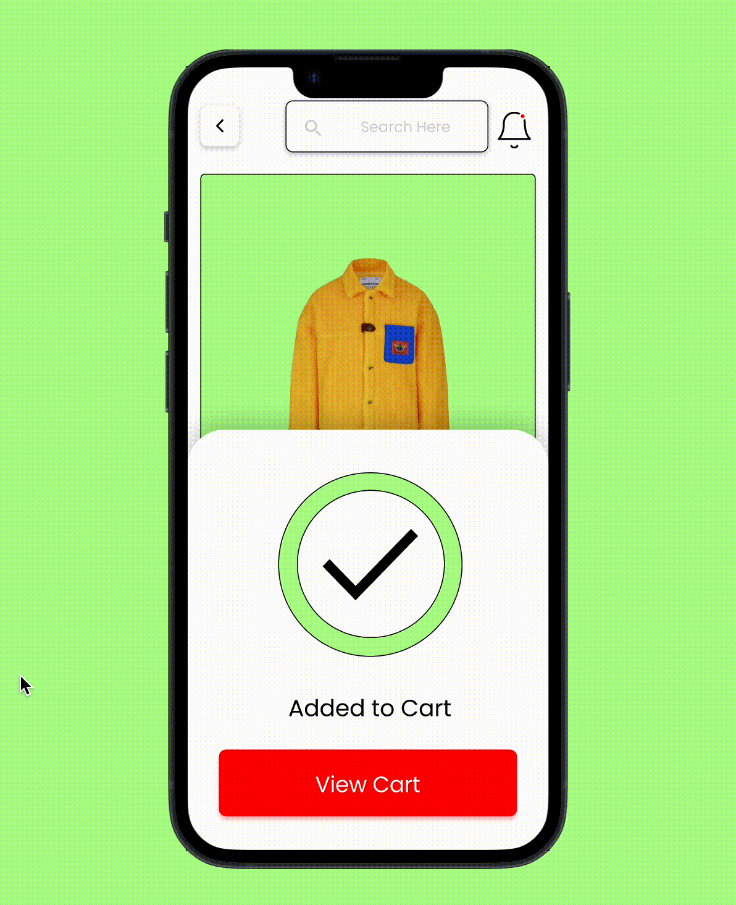
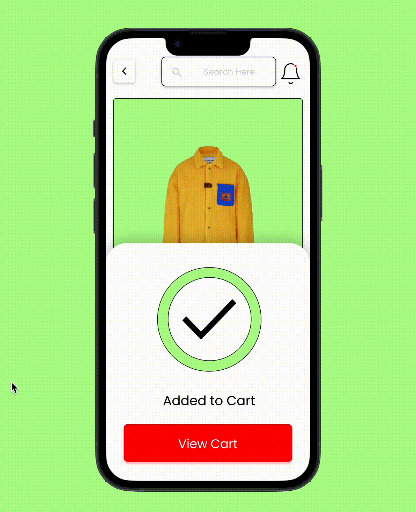

Summary
In the summer of 2023, I developed a mobile application aimed at simplifying the process of purchasing clothes from various physical clothing establishments. The mobile application enables users to effortlessly browse and select clothing items from their preferred physical clothing store, facilitating instant delivery to their doorstep without the need for in-person visits to clothing establishments.
The Problem
When shopping for clothing, visiting a physical clothing store presents several drawbacks. These challenges encompass the need to physically travel to the clothing store, maneuver through crowded aisles, and endure lengthy wait times in queues.
The Solution
My solution aims to address the challenges associated with shopping for clothing in physical clothing stores. By leveraging technology and e-commerce, Levitate provides a convenient and efficient alternative that eliminates the need for customers to physically travel to clothing stores, navigate crowded aisles, and endure lengthy wait times in queues. Through the mobile app, users can browse and purchase clothing items from the comfort of their own homes, benefiting from a seamless online shopping experience and instant doorstep delivery.
Delivery Tracker
This feature eliminates the need for customers to physically travel to clothing stores and empowers them to track their instant doorstep clothing delivery.
Clothing Categories
This feature facilitates users in navigating a well-structured and organized browsing experience by providing categorized sections that represent various types of clothing.
Clothing Store Picker
This functionality empowers users to seamlessly browse and choose from a vast array of clothing stores.
The Process
Literature Review
I began my research stage by gathering data and information from many sources about the clothing industry, delivery industry, and its participants. By doing this, it helped me to discover the behaviors, attitudes, and pain points of the users I was designing for.
Here are some facts about the negatives of traveling to a physical clothing store:
When visiting a physical clothing store, individuals must allocate time for travel, parking, and navigating through multiple aisles to locate their desired items. This process can pose challenges, particularly for individuals with busy schedules, as it demands additional time and effort.
Physical clothing stores are not easily accessible to everybody, especially those that live far or in remote places or have disabilities that affect mobility. This can negatively affect them because it restricts their options for buying clothing and diminishes their shopping experience.
Physical clothing stores often experience overcrowding, particularly during peak hours or busy seasons. This can lead to challenges in navigating through crowded aisles and enduring lengthy queues in checkouts, causing stress and inconvenience for shoppers.
Persona Spectrum
Having a persona spectrum helped me know who I was designing for
In my research of the clothing industry, delivery industry, and its participants, I developed a persona spectrum that encompasses different types of users. The primary user group I focused on is the average clothing shopper, as they exhibit a multitude of pain points in their shopping experience. Additionally, I identified delivery drivers as a secondary group, given their direct interaction with the clothing shopper.
Assumed benefits desired by the average clothing shopper
Outstanding Inquiries
- In the realm of consumer preferences, is there a demand for a mobile application that facilitates online shopping and offers instant doorstep delivery of clothing items?
- Are there existing mobile applications that incorporate instant doorstep delivery and provide users with the functionality to shop for clothing online conveniently?
- Is there room for improvement in existing mobile applications catering to physical clothing stores?
Survey
In order to gather additional data, I conducted a survey and distributed it on various social media platforms. The purpose of the survey was to gauge the general inclination of individuals towards using mobile applications for receiving clothes through delivery services. The survey yielded the following significant findings:
Finding 1: The survey revealed that a majority of individuals prefer using mobile applications for receiving clothes through delivery services, indicating a growing trend in online shopping convenience.
Finding 2: Among the surveyed participants, the younger demographic showed a higher inclination towards using mobile applications for receiving clothes, suggesting a shift in consumer behavior driven by technology adoption.
Finding 3: The survey findings highlighted specific features and benefits that users value in mobile applications for receiving clothes, such as ease of use, quick delivery, and a wide range of available clothing options.
During the survey, participants were queried regarding their shopping habits, including frequency and preference for online versus physical clothing store purchases. A majority expressed a preference for shopping in online clothing stores.
As part of the survey, participants were asked to rate their past experiences with online clothing shopping stores on a scale of 1-10. The analysis revealed that a significant majority of respondents had positive experiences, with the younger demographic showing a particularly enthusiastic response towards shopping in online clothing stores.

In the survey conducted on online clothing stores, 100% of the participants highlighted the significance of expedited delivery or instant doorstep delivery options. They expressed their dissatisfaction with the extended shipping times provided by online clothing stores.
Interview
Talking to a physical clothing shop owner
As part of my research, I interviewed the owner of a physical clothing store who had successfully expanded their business to the online clothing space. The purpose of this interview was to gather valuable insights and validate specific assumptions.
Defining the Persona
Leveraging comprehensive research and a deep understanding of the target audience, I developed detailed personas and organized the users into two key groups: the average clothing shopper and the delivery driver. Throughout the design process, these user groups played pivotal roles as integral components of the overall solution.
User Journey
Mapping out the pain points
A user journey map was meticulously created to comprehensively understand pain points and areas requiring design attention. The user journey map below vividly captures the interactions of an average clothing shopper using the mobile application, with a specific focus on identifying key pain points. Through analyzing the user journey map, a key pain point was identified: the lack of clothing store options on the Hub page. Addressing this particular pain point will enhance the mobile app's user experience and increase overall satisfaction.
 
